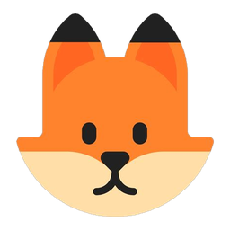

Instructions
How to use the Fox Pursuit direction-finding app
In a nutshell:
Getting Started
- Open the site. You'll see a single Username / Callsign field — no password is required on this site.
- Enter your callsign or a handle and tap Enter →. Your name only needs to be unique within an active hunt, and it will display in uppercase.
- You're taken to the Home page. Tap Hunt in the menu to reach the Dashboard where you create or join a hunt.
Creating and Joining a Hunt
Create a hunt: enter a unique hunt name (for example, FoxPursuit-June-A) and tap Create. The hunt stays active for 4 hours. Share the exact name with everyone who'll participate.
Join a hunt: enter the hunt name from the organizer and tap Join (hunt names are not case-sensitive, but the spelling must match). You go straight to the live map.
Hunt names are never listed publicly. Only people who know the name can join, so pick something you can share but others won't guess.
Coming back later: log in with the same name and an Open Current Hunt Map banner takes you straight back to a hunt you created — on any device, even after signing out. To return to a hunt you'd joined, just enter its name again; your spot is kept.
The Hunt Screen
The bar across the top of the hunt screen shows, from left to right:
| Item | Meaning |
|---|
| ● dot | Connection status — green when online, red when offline. |
 name | The current hunt's name. |
| timer | Countdown until the hunt auto-closes. It blinks red in the final stretch. |
| +30m | Hunt creator only — adds 30 minutes to the timer. |
| Close Hunt | Hunt creator only — ends the hunt early. |
| ⌂ Home | Returns to the Home page (your hunt keeps running). |
| Sign Out | Signs you out of the app. |
On phones (held upright or sideways) the control panel starts hidden. Tap Show Controls to open it over the map and Hide Controls to close it. It opens with the everyday items; tap Show advanced ▾ for the rest: the GPS and compass details, typed and manual bearings, Map Options and the panel's Submit button. On a computer the panel stays beside the map with everything shown; Hide advanced ▴ tucks the advanced items away. Android tablets work like phones.
GPS Location
When you open a hunt, the app starts your GPS automatically and keeps your position updated as you move. You'll need to allow location access if your device asks. If location access is denied, or your device has no GPS, you'll enter your location and bearing manually instead.
On a phone the GPS status line shows at the bottom-left of the map. In the control panel it sits under the GPS Location heading, just above the Latitude and Longitude fields (on a phone, tap Show advanced ▾ to see them). It first shows Requesting GPS…; once the device locks onto your position it turns green and shows how tight the estimate is — for example, GPS Accuracy: ±50 ft. Your latitude and longitude fill in by themselves, and you can tap either field to type or adjust a value by hand. Accuracy improves outdoors with a clear view of the sky.
On tablets, Chrome or Edge give the most reliable GPS. Firefox on some tablets keeps asking for location permission and may not update — if that happens, switch to Chrome or Edge, or place your location manually.
Submitting a Location & Bearing
The compass starts automatically on Android and desktop. On iPhone you must turn it on with a tap: the app opens the control panel for you, so tap the 🧭 Enable Compass button in the box at the top of the panel and choose Allow when iOS asks for Motion & Orientation access — iOS only grants this from that button tap. (If the panel is closed, tap Show Controls first. If you tapped Deny, clear this site's website data in Settings and reload, or just enter the bearing by hand.)
A small status line under the Compass Bearing heading (on a phone, also at the bottom-left of the map, as 🧭 123° NE) always shows where the current bearing is coming from — Compass: 123° NE when it's reading the magnetometer, GPS heading: 90° E · ±8° when it's using your direction of travel, or · hold in the moments right after you stop.
There are three ways to submit a location and bearing:
- Stand and point. Hold the device flat and point the top — or a side, if you're in landscape — directly at the strongest signal. Keep still a moment so the reading settles, then press Submit → on the map (Submit Location + Bearing in the panel). While you're stationary the app uses the magnetic compass for the bearing.
- Walk toward the signal. Where there's open space, hold the device flat and walk in a straight line directly toward the signal — at least 20 feet, and the farther the better (about 60–90 feet gives the cleanest result). As you walk, the bearing holds the compass (the way you're facing) until the GPS heading is solid, then snaps to the GPS heading (the way you walked) — watch the status line to see the switch. Stop, and within about 5 seconds press Submit → on the map (Submit Location + Bearing in the panel); the GPS heading is held that long, then reverts to the compass on its own. This is especially useful when something is disturbing your compass — most often in or near a vehicle.On iPhone: Apple's iOS reports your speed and position to web pages more slowly than Android does, so at a normal walking pace an iPhone won't gather a usable GPS heading before you've gone too far — this is a limitation of iOS, not the app. The feature still works on iPhone at a jog or faster, and it's genuinely useful at driving speeds, which is exactly when you'd want it (a vehicle throws off the compass). At walking speed on an iPhone, rely on the compass — after checking that it's accurate — or enter the bearing by hand.
- Enter it yourself. You can always override the sensors. To place a reading on the map, tap Manual Entry on the map (phones), or Add Manual Location & Bearing to Map in the panel's advanced items. Your current location is marked with a red ✕ — tap the ✕ to use it, or tap anywhere else on the map to set a different spot — then tap the direction of the signal (tracking pauses and resumes on its own). To type exact values instead, tap ⏹ Stop Tracking so GPS won't overwrite your entries, open the advanced items (Show advanced), enter the latitude, longitude, and bearing, then submit — and tap Stop Tracking again to resume. Use manual entry when you already know the bearing, when the device has no compass or a clearly-wrong one and you can't walk far enough for a GPS bearing, or when you're plotting coordinates a teammate radioed in.
0° = North · 90° = East · 180° = South · 270° = West.
🧭
"Compass needs calibration — wave phone in figure-8": your readings are drifting. Move the phone through a figure-8 motion a few times in the air to recalibrate the magnetometer, then try again.
🧲
"Magnetic interference — move away from metal objects": something nearby is distorting the compass (a vehicle, railing, speaker, or magnet). Step a few feet away from metal and electronics and the reading will settle.
Placing a Reading by Tapping the Map
If you'd rather not use live GPS and compass — for example, plotting a teammate's reported position — you can place a reading directly on the map:
- Tap Manual Entry on the map (phones), or Add Manual Location & Bearing to Map in the panel's advanced items. Live tracking pauses while you place the reading.
- Your current location is marked with a red ✕. Tap the ✕ to use it as your location, or tap anywhere else on the map to drop it somewhere different.
- Tap a second time in the direction of the signal to set the bearing. A preview marker and line appear.
- Happy with it? Tap Submit → on the map (or Submit Location + Bearing → in the panel). Want to redo it? Tap Cancel Manual on the map (or ✕ Clear Manual Entry & Start Over in the panel). Tracking resumes on its own once you submit or clear.
The manual button returns as soon as your reading is submitted, so you can place several in a row.
Submitting a Reading
- With a location and a bearing set, tap Submit → on the map, or Submit Location + Bearing → in the panel's advanced items. If something is missing, a message on the map says what.
- A colored marker drops at your location and a dashed line extends 10 miles along your bearing.
- Everyone else in the same hunt sees your marker appear on their map instantly.
- You can submit as many readings as you like from different spots — each adds another marker and line in your color.
- To remove one, find it in All Submissions and tap delete. You can delete your own; the hunt creator can delete any.
Working Offline
Fox hunts often happen where cell coverage is poor. The app is built to keep working through dead zones.
- 🗺Maps are cached automatically. Soon after your first GPS fix, the app quietly downloads map tiles around your area for offline use. You'll see Caching map tiles: 45% appear briefly under the Submit button. It also caches around each new submission location, so the shared hunt area fills in as everyone reports.
- 🔴The connection dot turns red when you lose signal, and you'll see a brief "Offline" note.
- 📨Submissions queue while offline. A number appears on the Submit button showing how many readings are waiting. They send automatically the moment you reconnect, and the badge clears itself.
- 🟢When signal returns, the dot turns green and a short "Back online — syncing…" note appears as your queued readings upload.
💡
Let the map finish caching while you still have signal — pan around the hunt area once so those tiles are stored before you head into a weak-coverage spot.
Map Controls and Options
| Control | What it does |
|---|
| ⊕ Fit All | Zooms to show every marker and bearing line at once. |
| 🧭 Drive to Fox Estimate | Appears once two or more bearings cross and a probable area exists — opens turn-by-turn directions to the estimated fox location. On phones it is an on-map button; it is also in the panel's advanced items (always shown on a computer). |
| Show usernames | Toggles the name labels next to each marker. |
| Show bearing lines | Toggles the dashed directional lines. |
| Show probable area | On by default. The fox is inside the red outline about 95% of the time, and the darker center is its single most likely spot. See Reading the Results below. |
| Tap a marker | Opens a popup with that person's name, coordinates, and bearing. |
| Show / Hide Controls | On phones, shows or hides the control panel. |
| Show advanced ▾ / Hide advanced ▴ | In the control panel: shows or hides the advanced items (GPS and compass details, typed and manual bearings, Map Options, Submit). |
Each participant is automatically given a distinct, high-contrast color so readings are easy to tell apart, for example:
Reading the Results
- Where bearing lines from different locations cross is the likely position of the fox transmitter.
- 📐The more spread out your readings are, the sharper the intersection. Two lines from nearly the same spot barely narrow it down; lines taken from very different angles pin it tightly.
- 📍Bearings taken from nearly the same spot — within about 30 m (100 ft) of each other — don't form a probable area together: the phone's GPS wobble is too large a share of the distance between them. Take your next bearing from somewhere else and the area appears. Close to the fox, when all your bearings are within a few steps of each other, follow the bearing lines themselves.
- 🔁Take a fresh reading as you close in. Bearings get more reliable the nearer you are, and updated lines tighten the fix.
- ⚠Reflections off hills, buildings, and metal can bend a signal. If one line looks like an outlier, take another reading from a new spot rather than trusting it.
- 🎯The likely zone is marked for you by default in dark red (toggle it under Show probable area in Map Options, one of the advanced items). The fox is inside the red outline about 95% of the time, and the darker center (⊕) is its single most likely spot — tap the ⊕ for a quick summary. The area's size and shape come from how closely your bearings agree and from the expected accuracy of each one — a compass reading, a GPS heading, a typed bearing and a map-tapped bearing are each weighted differently.
- 🗺After you submit a bearing, the map automatically frames the probable area so you can see where to head next. Once you move on toward it, the map goes back to following you.
- ⚖The estimate weights each bearing by how it was captured — a GPS or typed-in bearing counts more tightly than a phone-compass one — and automatically sets aside a stray, reflected bearing. A small, tight ellipse means a confident fix; a large or dashed one means the bearings are nearly parallel or disagree, so gather more readings from different angles.
Hunt Management
- ⏱Hunts close automatically 4 hours after they're created. The countdown is in the top bar.
- ➕The creator can extend the timer by 30 minutes with the +30m button.
- 🔒The creator can end a hunt early with Close Hunt.
- 📋The All Submissions list shows every reading, newest first. Tap any entry to jump to that marker.
- 💬The creator can post group info — fox frequency, leader frequency, a contact number — that everyone in the hunt can see.
- 🗑When a hunt closes, its markers and bearings are deleted. User accounts are kept.
Device Tips
| Device | Notes |
|---|
| iPhone | Tap the "Enable Compass" button to trigger the iOS Motion & Orientation prompt, then Allow. Safari works best. Portrait or landscape both work — the compass adjusts. |
| Android | The compass usually starts on its own. Chrome is recommended. |
| Desktop / Laptop | Location is less precise (Wi-Fi/IP based) and there's no compass — enter the bearing by hand or use tap-to-place. Great for following a group hunt's shared map. |
| All devices | Served over HTTPS. Keep the screen awake while using Watch GPS. After an app update, a hard refresh loads the newest version. |